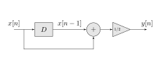

DTLTI Systems
Pieter PDefinition
As the name implies, Discrete-Time Linear Time-Invariant Systems, or DTLTI
systems for short, are systems that perform a linear transformation on
discrete functions. The fact that they are time-invariant means that the
transformation doesn't change over time: it doesn't matter if you apply it
to a certain signal now or in ten minutes, the resulting signals are the
same.
We'll define these properties of DTLTI systems mathematically:
is the transformation performed by a Discrete-Time Linear Time-Invariant (DTLTI) system if and only if
- The transformation is linear:
- The transformation is time-invariant:
Signals
We use square brackets to indicate that signals are discrete functions: In the simplest case, will just map to a scalar , but in general, it can also map to an -dimensional vector . This will be useful later, when we'll introduce systems with multiple inputs and outputs, or systems with multiple internal states.
Example
We'll define and plot a simple example signal, and then we'll apply a simple transformation to it. This is just a signal that oscillates between 3 and 1. This transformation has a very simple interpretation: it maps each point of the signal to the average of the current value and the previous value.
The input signal and the output signal of the system are
plotted in the figure below.

The system can be easily implemented as follows.  The arrows indicate the direction of the data flow. The rectangular block is called a delay or memory element, and it just delays the incoming signal with one time step. Sometimes, the Greek capital delta () is used instead, or in some contexts, it is indicated using , for reasons that will become apparent in the page on the Z-transform. The circle with the is a summator, it just adds all incoming signals together. Finally, the triangle containing a number is a scalar, and it just multiplies the signal with a constant factor.
A possible implementation of this system in Python is given in the code
snippet below.
We just have to save the input to the delay element on each time step,
because we need it to calculate the next output.
If you're unfamiliar with thefrom numpy import array, linspace, cos, piclass ExampleDTLTISystem:def __init__(self, initial_state: float = 0.0):self.state = initial_statedef __call__(self, x_n: float) -> float:# y[n] = (x[n] + x[n-1]) / 2y_n = (x_n + self.state) / 2.0# x[n] will be x[n-1] on the next time step,# so save it in the system's stateself.state = x_nreturn y_nn = linspace(0, 8, 9) # Create the time variable [0,1,2,…,7,8]x = cos(pi * n) + 2 # Generate the input signal x[n]T = ExampleDTLTISystem(1.0) # Instantiate the systemy = map(lambda x: T(x), x) # Apply the transformation y[n] = T(x[n])
map function, it is roughly
equivalent to the following snippet.
y = zeros(x.shape)for n in range(len(x)):y[n] = T(x[n])
It is a good exercise to try to understand how these three representations of the same system are related (the mathematical definition of , the block diagram, and the Python implementation).